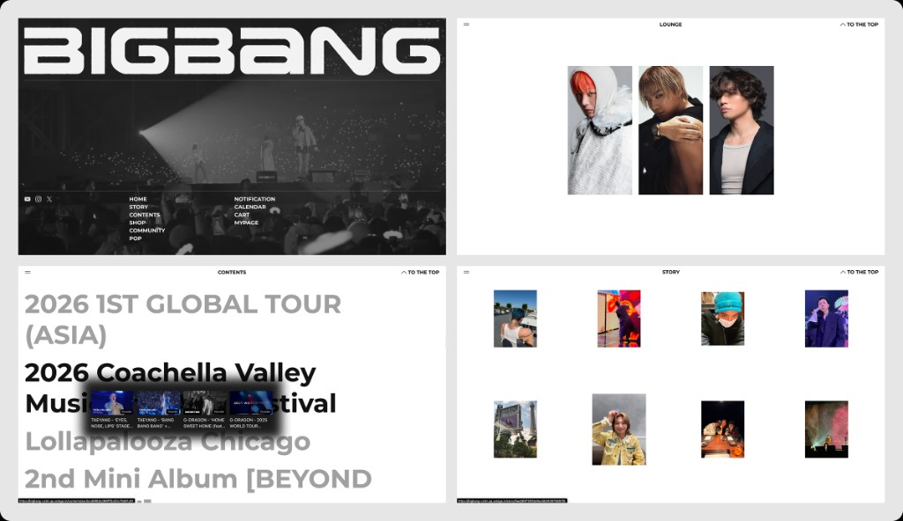

커스텀 빌드는 b.stage가 제공하는 표준 SaaS 피처를 넘어, 고객사가 원하는 고도화된 요구사항을 구현할 수 있도록 자유도 높은 확장 구조를 제공하는 기능입니다.
전문 개발 인력을 보유하거나 외주 개발사와 협업이 가능한 고객사가 특정 영역을 직접 개발하여 독립적이고 차별화된 브랜드 공간을 가질 수 있도록 지원합니다.
/home, /story 등)에 접근할 때 기존 서비스 대신 커스텀된 코드를 불러와 노출| 구분 | 세부 내용 |
|---|---|
| 플랫폼 사이드 | 유저 페이지(Front)뿐만 아니라 어드민 사이트(CMS)까지 커스텀 가능 |
| UI/UX 자유도 | 제공되는 비스테이지 템플릿에서 벗어나 페이지 내의 모든 시각적 요소(UX/UI)를 제약 없이 구성 |
| 영역 배치 | 하드코딩된 영역과 데이터가 연동된 영역을 혼합하여 배치 가능 |
⚠️ 제외 영역: GNB(상단 네비게이션 바)와 같은 공통 서비스 로직 영역은 현재 커스텀 범위에서 제외 (미노출은 가능)
커스텀 페이지 설계 시 제공하는 데이터바인딩 데이터와 Gateway API 데이터를 연동하여 데이터를 실시간으로 불러와 보여주는 것이 가능합니다.
| 연동 방식 | 설명 | 특징 |
|---|---|---|
| 데이터바인딩 | b.stage에 이미 설정된 구성과 데이터를 그대로 가져와 매핑하여 노출 |
즉시 연동 가능, 어드민에서 관리 |
| Gateway API | 규격화된 인터페이스를 통해 원천 데이터를 호출 | 3Q 내 지원 예정, 더 자유로운 설계 |
| 비연동 데이터 | 비스테이지 데이터와 연동되지 않는 직접 추가한 에셋 데이터 | 별도 관리도구 개발 필요 |
기존 비스테이지 스테이지 커스텀 기능 및 공통 Rule의 한계를 벗어나, 데이터바인딩을 통해 연동된 콘텐츠 관리는 유지하면서 풀페이지의 자유로운 레이아웃과 역동적인 인터렉션 UI, IP의 아이덴티티를 나타낼 수 있는 비주얼을 구현했습니다.
| 항목 | 내용 |
|---|---|
| 커스텀 플랫폼 | 홈 커스텀(유저페이지) + 홈 디자인 관리툴(어드민페이지) |
| 기획/디자인 | BMF 내부에서 진행 |
| 데이터연동 | Liquid 템플릿을 통해 다양한 기존 비스테이지 데이터와 연동 |
| 개발 주체 | 숙련된 협력 외주 개발사를 통해 빠르게 개발 진행 |

두 가지 방식의 아키텍처를 모두 지원합니다. 목적에 맞는 방식을 선택하여 개발하면 됩니다.
간편하고 빠른 개발을 원하는 경우 추천
| 구분 | 내용 |
|---|---|
| 방식 | b.stage에 이미 설정된 구성과 데이터를 그대로 가져와 매핑하여 노출 |
| 지원 데이터 | 라운지, 스토리 콘텐츠, 최신 콘텐츠 리스트, 커머스 상품 데이터 등 |
| 특징 | • 데이터 변경 시 페이지에 실시간 반영 • 수정 시 개발 공수가 적음 • 별도 환경 구축 불필요 |
고도화된 커스터마이징과 모던 프레임워크 활용을 원하는 경우 추천
| 구분 | 내용 |
|---|---|
| 방식 | 모던 프레임워크 생태계(React, Vue, Svelte 등)를 활용하여 b.stage를 Full-customizable 플랫폼으로 확장 |
| 프레임워크 자유도 | @bstage/sdk를 통해 React 컴포넌트 등을 Web Component로 변환하여 브라우저 네이티브 표준으로 통합 |
| 기술 표준 | Shadow DOM을 활용하여 b.stage 본체와 스타일 및 실행 컨텍스트를 안전하게 격리 |
| 통합 모델 | iframe의 고질적인 문제(높이 조절, 딥링크 등) 없이 동일 컨텍스트에서 동기적으로 데이터 교환 |
커스텀 빌드는 GitHub Action을 기반으로 한 자동 배포 환경을 제공하며, 독립된 조직(Organization) 및 레포지토리를 통해 코드를 관리합니다.
| 단계 | 설명 |
|---|---|
| 1️⃣ 레포지토리 생성 | 개발이 결정되면 bmf-partners Org에 개발사의 레포지토리를 생성하고 요청된 계정에 개발자 권한 부여 |
| 2️⃣ 코드 개발 및 푸시 | 권한이 부여된 계정으로 로그인하여 약속된 코드 규약(Liquid 등)에 따라 작업 후 GitHub 레포지토리에 코드 푸시 |
| 3️⃣ 자동 배포 실행 | Push 또는 Tag 생성 시 GitHub Action이 트리거되어 약 1~2분 내로 배포가 자동 진행 |
| 4️⃣ 정적 자산 관리 | 배포된 이미지나 아이콘 등은 각 환경별 전용 CDN 주소를 통해 안전하게 서빙https://cdn.static.astage.in/partners/{stage}/... |
| 5️⃣ 최종 확인 | 배포 완료 후 각 환경의 접속 URL을 통해 실제 반영 여부를 검수 |
제공되는 Gateway API를 통해 어드민을 통해 관리되는 비스테이지 핵심 데이터에 직접 접근하고 사용할 수 있습니다.
참고: API별 상세 명세는 별도 가이드를 참고해 주시기 바랍니다.
| API 구분 | 제공 기능 |
|---|---|
| Home API | 홈 섹션 구성, 배너 리스트, 커스텀 섹션 조회 |
| Content API | 콘텐츠 리스트/상세, 카테고리 정보, 멤버십 콘텐츠 권한 확인 |
| Recommend API | 랭킹 데이터 및 사용자 맞춤 추천 콘텐츠 호출 |
| 기타 추가 API | 26.3Q 내 추가 완료 예정 |
맞춤형 비스테이지 솔루션인 커스텀 빌드의 도입을 위해서는 아래와 같은 프로세스가 필요합니다.
| 단계 | 설명 |
|---|---|
| 1️⃣ 커스텀 빌드 사용 요청 | 비스테이지팀에 커스텀 빌드 기능 사용을 요청 |
| 2️⃣ 도입 컨설팅 | 논의를 통해 원하는 요구사항을 구체화하고 개발기간, 비용, 커스텀 범위 등을 산정 |
| 3️⃣ 기획/디자인 | 개발을 진행할 커스텀 화면의 기획과 디자인을 확인하고 결정 (자체 진행 시 생략 가능) |
| 4️⃣ 결과물 확인 및 적용 | 개발 결과물을 확인한 뒤 홈페이지에 커스텀을 최종 적용 |
실제 개발에 착수 시에는 아래와 같은 프로세스를 따릅니다.
| 단계 | 설명 |
|---|---|
| 1️⃣ 개발 환경 세팅 | 전용 GitHub 레포지토리 및 보안 환경 구축 등 개발을 위한 환경을 미리 세팅 |
| 2️⃣ 개발 가이드 전달 | 개발에 필요한 FE/BE 기술 문서, API 목록, 디자인 시스템 가이드(Figma 등)를 전달받음 |
| 3️⃣ 개발 및 코워킹 | 약속된 코드 규약에 따라 개발을 진행하며, 필요 시 추가 API 개발을 위해 비마이프렌즈와 소통 |
| 4️⃣ 코드 통합 및 검수 | 개발된 코드를 푸시하면 BMF에서 기존 서비스 영역과 통합하고 코드 리뷰 진행 |
| 5️⃣ 서비스 QA 및 배포 | 전체 기능 점검 후 최종 서비스를 배포 |
프로젝트 시작 전, 보안과 원활한 협업을 위해 다음 단계를 반드시 완료해야 합니다.
중요: 보안 규정을 준수하지 않으면 프로젝트 진행이 불가능합니다.
서약서 제출
계정 신청
접근 권한 부여
최종 점검
추가로 궁금하신 점이나, 특정 데이터 연동(API)에 대한 상세 규격이 필요하시면 말씀해 주세요!
| 구분 | 기술 |
|---|---|
| Frontend | React, Vue, Svelte, Web Components |
| Template Engine | Liquid |
| CI/CD | GitHub Actions |
| CDN | Custom Static Asset CDN |
| API | Gateway API (REST) |
참고: 데이터가 변경되면 페이지에 실시간 반영되지만, 커스터마이징에는 일부 제한이 있을 수 있습니다.